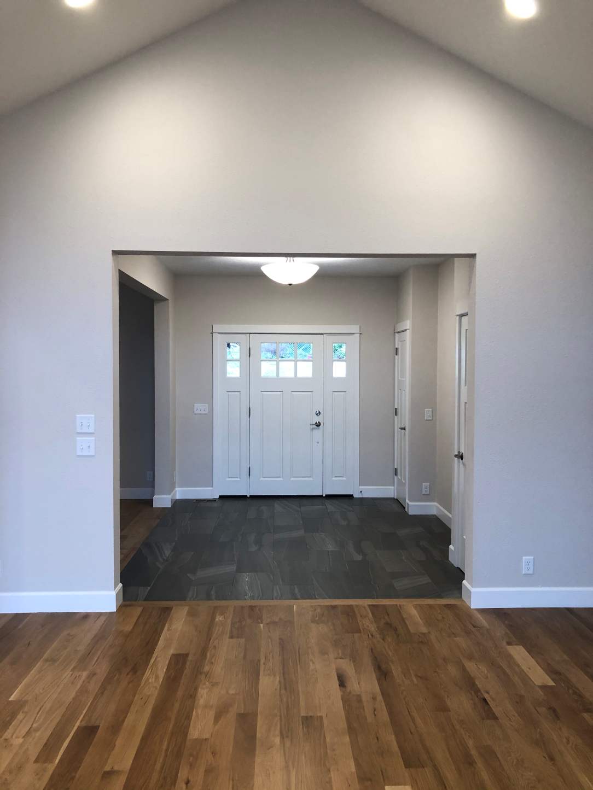

Starting in 2017, my husband and I had decided on building a new how - a custom home. There is a lot of
planning that goes into building a house, and one of the largest challenges is trying to stay on budget. Not
an easy task.
We originally wanted oak hardwood through out the house but found hardwood rather expensive, and we wanted
the house to be a bit more inviting and wanted to use flooring in areas that would last.
So our journey began.
We decided on the following:
Carpeting
Bedrooms
Tile
Foyer and Entryway
Mudroom
Laundry Room
Hardwood
Kitchen
Dinning Room
Living Room
Hallways

Our Foyer at Home
The Pages
In the following webpages, we wanted to provide you with some of the information that we collected
while deciding on flooring. Flooring is a huge part of the house as should not be taken lightly.
Flooring types, color, direction of layout are also to take into consideration when making a decision.
We used a copy of our blueprints to lay out which flooring goes where and how it needs to be laid out.
This helped our installers immensely.
The Importance of Flooring
"Many times the floor is not given the importance it deserves when one considers the definition of
the
interior design of a floor. Often, we think more about other elements that go on top of it, including what
to put
on the walls. We take it as something given that largely determines all the rest. If we think about it well,
it is
a large surface that impacts on the visual perspective of space, sensory reach and conditions the whole.
Therefore
, your good choice is of vital importance for the success of the project."—
coblonal interior design